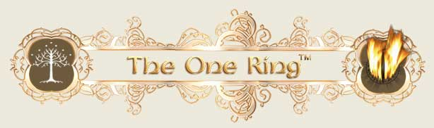

|
© 2021 Festival Art and Books. All rights reserved.  Review of the online One Ring online Facebook Game I am a complete newcomer to this kind of gaming. The last games that I played were of the D&D type at Oxford University, and that was back in the 1980’s. So, how did the Microcosm Games Ltd. One Ring game feel to use and play, and how enjoyable was it? Well, let’s start from the very beginning. If you go to the game – which you can access from Facebook or directly, just search Microcosm Games – you are asked to allow access to your facebook page to begin the process. This is a neat idea, as it would mean that since this is a multi player gaming experience, you could have all your Facebook friends join in with you. The choice of character is very easy to do – I imagine some people might wish for a wider character choice, and perhaps they might even want to play one of the evil side (try and be Sauron, perhaps?!), but I personally found the choice given would be sufficient to allow for a lot of gaming pleasure. The on screen Bilbo is a nice touch, very helpful – though I am less sure of his West Country accent; but that is just a minor thing, really. You can ‘remove’ him from the action if you so wish, so he’s not always there and intrusive or anything. The whole introduction to the game and the choice of character is very simple and not at all daunting, even for someone as new to this as I am. The game play was good fun – clean graphics on screen, and even on what is by now a fairly slow machine by modern standards, and running XP still, the game seems to run fast enough. The sound effects are there, and not too intrusive. I have heard some games that children of friends play when visiting, and the sound effects have often driven me to distraction! In this case, they are just sufficient to give you more of an experience – perhaps the word I am looking for is understated? But for me that is a huge plus. The days of games with annoying little jingles attached are well and truly over, thank goodness. The combat is simple enough and seems to work well, even for a beginner such as myself. The game seems to flow on from turn to turn – you have all the time you wish to make your choices and then move on. OK, I was trying this out in the introduction level of difficulty, and never explored the higher levels, but I am guessing that there is plenty there to keep the gamer amused. All in all, I would say that the One Ring game is as easy to use as it can be, runs very smoothly, and seems to contain all the variations and wealth of information that you could want from this type of game. The graphics are not 3D or Weta level of CGI, but they are more than decent enough for a game where the player wants to get on with playing and exploring the world of Middle earth in a gaming environment. It is certainly a game that I can return to for more entertainment and I can recommend it to readers, even if you have never tried this kind of game before, as I hadn’t. For those who are more experienced, I believe it offers a satisfying gaming experience because of the wide scope of the play area and choice of characters and the levels of difficulty. Alex Lewis.
|